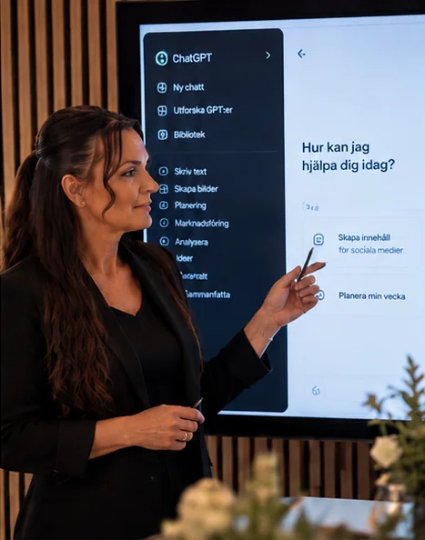

Lär dig använda AI på riktigt – även om du aldrig har använt ChatGPT tidigare.
Lär dig använda AI från första prompten till text, bilder, video och smartare arbetsflöden – steg för steg och helt utan tekniska förkunskaper.
2 995 kr inkl. moms • 12 månaders tillgång
Målet är inte att du ska kunna alla AI-verktyg. Målet är att du ska känna dig trygg nog att använda AI varje dag, för det som faktiskt spelar roll för dig.

Då är den här kursen gjord för dig. Du behöver inte vara teknisk – du behöver bara någon som visar vägen, ett steg i taget.
Du får tillgång till hela kursen så fort du har anmält dig. Inga fasta tider att passa.
Korta videolektioner där du ser exakt hur det går till – och övningar där du gör det själv direkt efteråt.
Med färdiga promptmallar tar du det du lärt dig rakt in i din vardag, ditt jobb eller ditt företag.
Du går från helt nybörjare till att använda AI självständigt – i en tydlig ordning där varje modul bygger på den förra.
Vad AI är, vad ChatGPT kan göra, hur du kommer igång, olika användningsområden och grundläggande säkerhet.
Hur du skriver bra prompts, ställer följdfrågor, förbättrar svar och får AI att skriva och arbeta på det sätt du själv vill.
Planering, resor, mat, idéer, studier, språk, mejl, dokument, jämförelser och problemlösning.
Text, bilder, presentationer, sociala medier, Canva och enkel AI-video.
Kundservice, mejl, administration, marknadsföring, content, erbjudanden, analyser, CRM och hur AI kan spara tid.
AI-avatarer, AI-assistenter, automatiseringar och hur du börjar bygga smartare AI-arbetsflöden.
2 995 kr inkl. moms • 12 månaders tillgång
En kurs, ett pris – allt ingår.
Kursen är gjord för dig som vill förstå och använda AI – oavsett var du börjar.
Din kursledare
Monica Lööv, grundare av MonicaLoov.ai
Jag arbetar med AI varje dag – med AI-video, AI-avatarer och AI-bilder för svenska företag. I kursen visar jag dig samma sätt att tänka och arbeta, förklarat så att vem som helst kan följa med.
Praktisk AI för vardag, arbete & företag
100 % online • Börja direkt • Lär dig i din egen takt
Nej. Kursen börjar från noll. Kan du skicka ett mejl och använda en webbläsare kan du gå kursen.
Direkt. Du får tillgång till hela kursen så fort du har anmält dig, och du går den i din egen takt.
Lektionerna är korta, så du kan lägga några minuter eller en hel kväll – det bestämmer du. Totalt omfattar kursen [ca X timmar] videolektioner.
I 12 månader. Under den tiden kan du gå igenom lektionerna så många gånger du vill.
Du kan komma långt med gratisversionerna. Där ett verktyg har en betalversion som gör stor skillnad visar jag det – men det är alltid ditt val.
Ja, när du vet hur. Redan i modul 1 går vi igenom vad du kan dela, vad du bör undvika och hur du granskar det AI svarar.
AI utvecklas snabbt. När viktiga verktyg ändras uppdateras kursen – och uppdateringarna ingår under hela din tillgångsperiod.
Ja. När du har gått igenom kursen får du ett kursintyg.
[Ja – kontakta oss för faktura till företag.]
[Dina villkor för ångerrätt/återbetalning.]
Du behöver inga tekniska förkunskaper. Börja från grunden och lär dig i din egen takt.
2 995 kr inkl. moms • 12 månaders tillgång